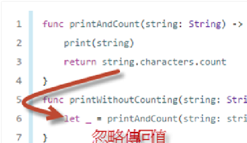
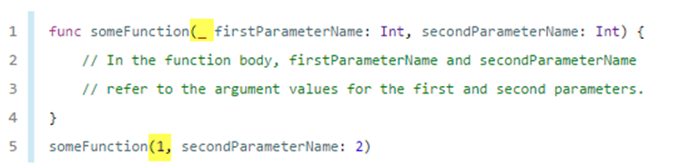
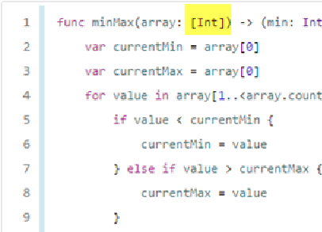

SWIFT PROGRAMMING LANGUAGE
A SWIFT JOURNEY INTO THE NEW APPLE PROGRAMMING LANGUAGE
目的是幫助你完成本學期的課程，如果有興趣想要學完整一點，可以看這一份 教程。
1. 基本語法
常數(let)和變數(var)宣告
練習
自己試一下使用let宣告變數，然後再另外指定值給這個變數，看一下錯誤。數字-布林
Operator 運算子
2. tuples 元組
練習
試一下使用tuple 建立一個3D空間point的變數，可以point.x代表x軸，point.y和point.z以此類推，然後印出來這個點和原點的距離。3. optionals
b = nil // 成功
var b:Int? =1
當b=nil，b就變成一個空的框 b=
a就無法表示nil （Int 無法表示 空）
練習
因此需要一個去掉框線的工具就是 ！
練習

練習
4. 條件式和迴圈
for
if 和 = 的糾葛
練習
5. Function
有傳入參數 和傳回值
無傳入參數 無傳回值
guard
練習
_ 表示忽略
呼叫時 可以省略參數名稱

輸入參數是陣列
參數預設值